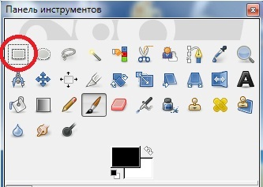

Инструменты выделения
Прямоугольное выделение
Прямоугольное выделение — первый инструмент, с его помощью можно выделять прямоугольные области изображения любых размеров.
Откройте любое изображение или фотографию. Выберите этот инструмент и нарисуйте с его помощью предполагаемую диагональ прямоугольника выделения. На изображении выделена определенная область. Форму прямоугольника выделения можно редактировать после выделения. Для этого надо воспользоваться специальными квадратами, расположенными во внутренних углах рамки.
Устанавливая курсор на эти квадраты, можно масштабировать форму прямоугольника. Если поместить курсор между квадратами, появится вспомогательный прямоугольник, с помощью которого можно вытягивать форму выделения или, наоборот, сужать ее.
Выделение нужно прежде всего для ограничения действия инструментов, при помощи выделения отдельных регионов изображения мы удобным образом локализуем действие разнообразных рисующих инструментов.
Параметры инструмента Прямоугольное выделение
Опция Режим позволяет переключаться между следующими режимами действия инструмента:
• Заменить текущее выделение — каждый раз при применении инструмента будет выделяться новая область, а прежнее выделение будет пропадать. Данный режим является стандартным, поэтому, не меняя настроек, выделять какие-либо области, кроме прямоугольных, нельзя;
• Добавить в текущее выделение — в этом режиме можно добавлять выделенные регионы к уже существующим. Например, можно выделить несколько прямоугольных областей, не пересекающихся друг с другом, а можем выделить один большой регион и несколько прилегающих так, чтобы выделяемые регионы слились в одно общее выделение. При этом прямоугольная форма выделения будет нарушена;
• Вычесть из текущего выделения — данный режим позволяет вычитать формы из уже имеющегося выделения. Для использования инструмента в этом режиме необходимо, чтобы какой-либо регион был уже выделен, т. е. в данном режиме мы продолжаем работать, а не начинаем. Например: выделите в обычном режиме (Заменить текущее выделение) какую-либо область. Затем перейдите в режим Вычесть из текущего выделения и выделите область, пересекающуюся с предыдущим выделением. В результате область пересечения будет вычтена из формы первого выделения, а второе выделение пропадет сразу же. Так можно немного корректировать форму основного выделения;
• Создать выделение из пересечения с текущим — последний режим, позволяющий создавать область выделения из области пересечения двух других выделений. Рассмотрим на конкретном примере. Выделите какой-либо регион, работая в первом режиме данного инструмента. Затем перейдите в режим Создать выделение из пересечения с текущим и выделите новый регион, форма которого частично пересекается с формой первого региона. В результате оба региона пропадут, а останется лишь область, в пределах которой они пересекались. Таким образом, мы получили область, производную от двух предыдущих. Стоит отметить, что во время редактирования получившейся области при помощи угловых квадратов обе исходные области вновь временно появляются.
Таким образом, опция Режим позволяет менять режим действия инструмента.
Антиалиасинг — эта опция доступна лишь при использовании опции Закругленные углы. При использовании опции Антиалиасинг форма выделения региона становится сглаженной.
Растушевать края — опция позволяет сделать границы выделения мягкими, а не обыкновенными ровными линиями. При этом визуально форма будет также ограничиваться обыкновенными пунктирными линиями, растушевка зрительно условна. Однако ее можно заметить, применив к выделению какой-либо инструмент, например Кисть.
Рассмотрим на примере. Выберите инструмент Прямоугольное выделение и перед его применением активируйте опцию Растушевать края. Затем выделите любой регион. Возьмите инструмент Кисть и примените его в пределах выделенного региона так, чтобы штрихи ложились вдоль границ выделения. Мы видим: форма выделения осталась четкой, границы же стали более размытыми. Значение параметра Радиус здесь отвечает за степень сглаживания границ выделения.
Параметр Закругленные углы позволяет округлять углы прямоугольника выделения. Используя данный параметр, можно округлять форму выделения. Установите здесь галочку и попробуйте нарисовать прямоугольник выделения. Углы его будут округлыми. С помощью параметра Радиус здесь можно задавать степень округления углов. Чем выше значение данного параметра, тем мягче углы.
Рисовать из центра — опция, позволяющая изменить порядок создания области выделения. Активировав ее, мы будем рисовать прямоугольник выделения не от угла к углу, а от центра к углу. В некоторых случаях такой метод бывает удобен, это зависит от формы выделяемого региона.
Фиксирование — опция, позволяющая зафиксировать соотношение сторон региона выделения, а также его ширину, высоту и размер. Фиксация этих параметров бывает полезна для более аккуратного редактирования формы региона выделения.
Позиция — здесь можно задать координаты региона выделения.
Размер — здесь можно задать размер региона выделения. Этот и предыдущий параметр лучше всего использовать с единицей измерения — пиксель.
Затемнить невыделенное — опция, позволяющая визуально затемнять невыделенные регионы, для того чтобы акцентировать внимание на выделенной части.
Далее располагаются параметры выбора направляющих линий и автоматического сокращения выделения — такие же по действию, как и в случае с инструментом Кадрирование.
Таким образом, при помощи инструмента Прямоугольное выделение можно выделять регионы как прямоугольные, так и любых производных форм.-